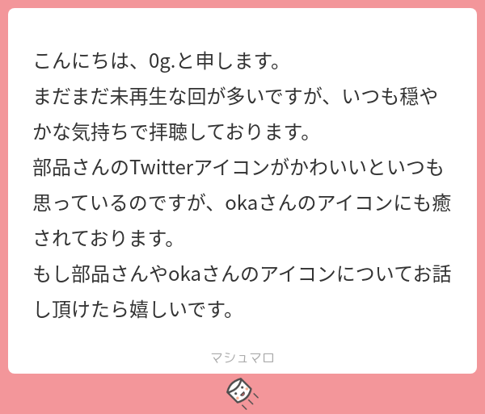
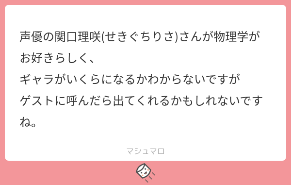

32: Spaces from space
Starring


Show notes
目次
0:00 イントロ
02:05 まにーさんの研究トーク
- 第一原理計算 - 理学のキーワード - 東京大学 大学院理学系研究科・理学部
- 水素分子と核スピン
- 核スピン異性体
- オルト(トリプレット)とパラ(シングレット)がある
- ノーマル水素ではオルト：パラ=3:1で存在する
- 基底状態ではオルト水素は回転エネルギーを持ってしまう
- 基本的には孤立系だと核スピン転換に137億年かかる
- 固体表面での核スピン転換の概説
- 東大福谷研のポスター
- 固体表面に吸着した水素だと核スピン転換が早い
- 液化水素のボイル・オフ問題
- 水素の高速核スピン変換のメカニズムを実験的に立証 ～効率的な水素利用に向けた量子力学的アプローチ～（プレスリリース） — SPring-8 Web Site
- 水素同士や水素タンクの壁面との相互作用で核スピン転換が起こる
- 3/4を占めるオルト水素がパラ水素になるときに放出する回転エネルギーで液化水素が蒸発する(ボイル・オフ)
- ポジトロニウムとは? - Tabletop experiments
- 地球にやさしい水素社会の実現、鍵を握る磁気冷凍技術とは？｜ニュースイッチ by 日刊工業新聞社
- ※Ultracold neutrons (UCN, 超冷中性子) の実験は He3 希釈冷凍機を使うことが 多いので磁気冷凍は関係ありませんでした
- 天文学における水素分子の核スピン
- 天文学における氷の重要性の動画 (YouTube)
- 氷表面上での水素分子の核スピン転換 (PDF)
- 宇宙で生成された水のオルト：パラ比は地球と同じ―従来の定説覆す＝―北大・羽馬哲也氏ら - 財経新聞
- Statistical ortho-to-para ratio of water desorbed from ice at 10 kelvin - Science

- 宇宙には希薄にしか物質が存在しないから，水素分子の核スピン分布には過去の温度情報が含まれていると考えられていた
- 宇宙に存在する主な物質(氷)上での核スピン転換速度がわかれば，水素分子が作られた時の温度が逆算できると考えられていた
- でも極低温の氷上で水素分子が生成された時には，通常通りo:p=3:1になることがわかって無理だった
- Statistical ortho-to-para ratio of water desorbed from ice at 10 kelvin - Science
- 湯川記念財団 望月基金
1985年には、大阪大学で最初の女性教授に就任されました
いっちぃさんが量子力学を学んだのは望月先生の『量子物理』だった気がする
- 永宮健夫 - Wikipedia
阪大基礎工学部を作った人
39:03 ニュース
39:09 水素化物超伝導の最新動向
- Ep. 30 の続報
Standard Superconductivity in Carbonaceous Sulfur Hydridehttps://t.co/hIR2DFbYOy
お、C-S-H系高圧超伝導の著者が数々の疑問に生データをもってお答えします論文だ— 部品（池田エライザ） (@tjmlab) December 1, 2021
- Science の記事
49:08 宇宙飛行士の募集が始まる件
- JAXA 宇宙飛行士候補者募集 特設サイト Hello! EXPLORES PROJECT
- 『メタルギア』小島秀夫監督、夢は宇宙飛行士 JAXAが募集中で「仕事を捨てなきゃ…」 長濱ねるは現実的な夢語り自虐 - ORICON NEWS
53:07 仮面ライダーと東映
- 仮面ライダー制作の東映社員、セクハラと過重労働を訴えるも「他の子は我慢したよ」。適応障害と診断、会社は「回答控える」 - ハフポスト
- 東映（株）に対し過重労働/セクハラの改善を求めます【仮面ライダーリバイス・プロデューサー補佐が被害を訴え】｜総合サポートユニオン｜note
- キャンペーン · 東映株式会社へガオフェスでの性暴力に対する正式な見解と改善を求めます！ · Change.org
56:00 おたより

こんにちは、0g.と申します。 まだまだ未再生な回が多いですが、いつも穏やかな気持ちで拝聴しております。 部品さんのTwitterアイコンがかわいいといつも思っているのですが、okaさんのアイコンにも癒されております。 もし部品さんやokaさんのアイコンについてお話し頂けたら嬉しい。
- 女子力アップCafe Googirl
- 三井みちこさん (@mitsuimichiko) / Twitter
- Ep. 16 Torture Bezos by piling lots of Kindle tablets on his lap - あらB.fm でも話してます
- Miga, Quatchi, Sumi and Mukmuk - Wikipedia
- #ポッドキャストお絵かき みんな描こう！
#arkbfm pic.twitter.com/mz0izWeyhx
— まにー (@maraky99) December 3, 2021

声優の関口理咲(せきぐちりさ)さんが物理学がお好きらしく、 ギャラがいくらになるかわからないですが ゲストに呼んだら出てくれるかもしれないですね。
1:05:28 おすすめコンテンツ
1:05:38 おススメグッズ
1:11:07 理系グッズ
Interaxionで話題に出したアルケミノートさんグッズ pic.twitter.com/WAIhSzjQQt
— まにー (@maraky99) December 4, 2021
1:22:40 オススメ理系アニメ・特撮
- 仮面ライダービルド
- 全仮面ライダー大投票作品ランキング5位
- キャラクターランキング9-11位
- 主題歌ランキング2位
- シータさんが監修に入ったので界隈でも有名になった作品
- 全仮面ライダー大投票作品ランキング5位
- ゴジラSP
- 「ゴジラS.P＜シンギュラポイント＞」シリーズ構成・円城塔インタビュー、ゴジラ初の13話構成をいかに作っていったのか？ - GIGAZINE
OPの四次元立方体とか、「Processing」で回しているものがあります。本当はUnityに統合したいんですが……。
- 未踏：事業概要：IPA 独立行政法人 情報処理推進機構
- 「ゴジラS.P＜シンギュラポイント＞」シリーズ構成・円城塔インタビュー、ゴジラ初の13話構成をいかに作っていったのか？ - GIGAZINE
- アルドノア・ゼロ
- 楽園追放
- PSYCHO-PASS
- VIVY
- ID: INVADED
- 陰謀論のオシゴト
1:50:14 オススメのYoutube
- 物理や数学のアニメーション動画チャンネル1 3Blue1Brown
- 統計のアニメーション動画 StatQuest
- 物理実験や数学の概念をアニメーションでわかりやすく
- ビー玉レース Jelle’s Marble Runs
- レゴ実験 Brick Experiment Channel
- 磁石遊び Magnetic Games
2:01:15 オススメの本
- 伝わるデザイン (書籍版)
- 学生・研究者のための 使える!PowerPointスライドデザイン
- 学生・研究者のための伝わる! 学会ポスターのデザイン術
- 図解でわかる！理工系のためのよい文章の書き方 論文・レポートを自力で書けるようになる方法
公式サイトで一部無料 - プレゼンテーション Zen 第3版
- なぜ科学はストーリーを必要としているのか
- シュヴァルツェスマーケン
- 歴史 - 「マブラヴ オルタネイティヴ」まとめWiki - atwiki（アットウィキ）
マブラヴオルタネイティヴの正しい年表
- 歴史 - 「マブラヴ オルタネイティヴ」まとめWiki - atwiki（アットウィキ）
- ＧＯＤＺＩＬＬＡ 怪獣黙示録
- ＧＯＤＺＩＬＬＡ プロジェクト・メカゴジラ
- 鬼哭街
- ピュア
- メジャーリーグの数理科学
- アメリカ野球学会(SABR)
- マネーボール 書籍，映画
- 地球の未来のため僕が決断したこと 気候大災害は防げる
- 体系物理
2:41:24 収録機器
- 持っているヘッドホン・ヘッドセット-2021年10月版｜まにー｜note
- DaVinci Resolveで別撮りした音声を合わせる方法！ - Vook(ヴック)
- NVIDIA BroadcastApp - AIで音声とビデオを強化 - NVIDIA
- ダイナミックマイク：ATR2100x-USB
まにーさんとoka使用のマイク - ロジクール ヘッドセット H540r
ぶひんさん使用のヘッドセット - AfterShokz OpenComm
okaが会議のときに使用している骨伝導ヘッドセット
お知らせ
- YouTube: まにーの動画倉庫
- Blog: まにー｜note
- Stand.fm (更新停止): まにキャスト.fm
- JAPAN PODCAST AWARDS ジャパンポッドキャストアワード
- 出演して頂ける方や感想などをお待ちしております。 #interaxion
おたよりコーナーを作りました。質問、感想、要望などお待ちしております。https://t.co/rz0mlRKZU3
— Interaxion Podcast (@interaxion) January 12, 2021